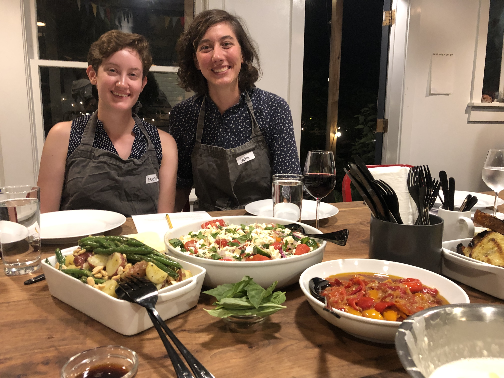

Cooking Class
Overview
We could learn some new cooking skills in a cozy cooking class!
Summary
- Location: Various locations in Manhattan, NY (or elsewhere I just focused my search on Manhattan)
- Time: 3 ish hours
- Cost: ~$120 per person
- Vibe: Cozy, educational, interactive
Details
Here are some cooking class options in Manhattan that have availability this week/weekend:
- Home Cooking New York is in SoHo. It looks like they have a lot of class availability while we are there. Some class options include how to cook shellfish, how to cook shawarma/falafel/flatbreads, and Thai and Vietnamese flavors
- Cozymeal is a weird one. Its like airbnb experiences but they're all cooking so you like go in people's apartments and learn from them. Idk could be kind of creepy but there are tons of offerings (all over the place too) could be worth considering.
- Self Up Cooking Classes is in the financial district. They seem to use a cozymeal-like interface for their sales, but they have a physical location and lots of reviews. Classes have to be booked 48 hours in advanced so if this is the option we want we should act fast. They have a lot of regularly offered classes including sushi making, romantic Italian, and dumplings/dim sum